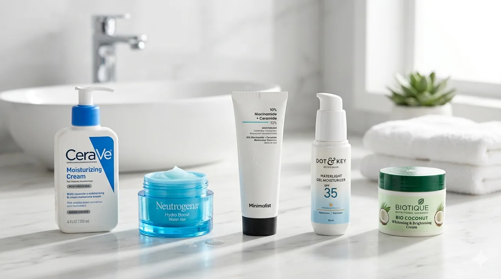
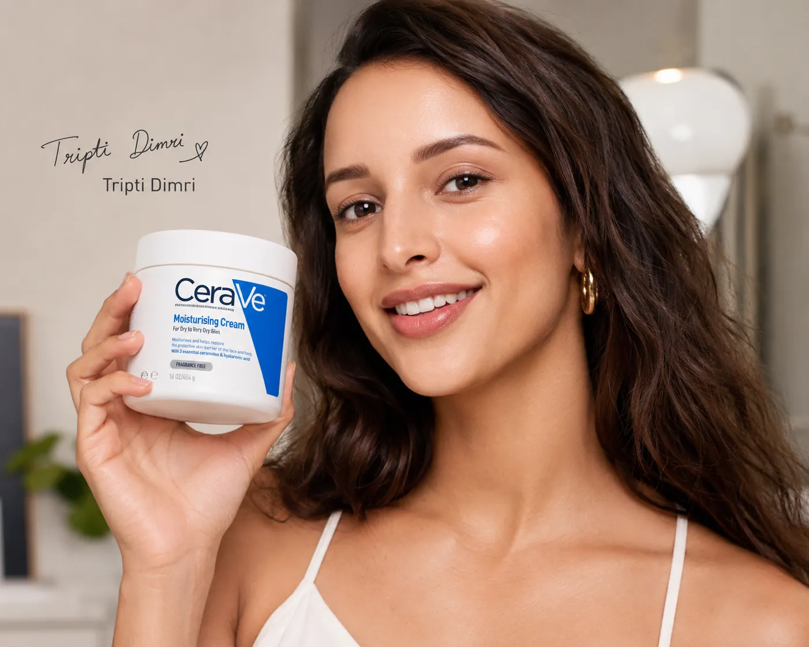
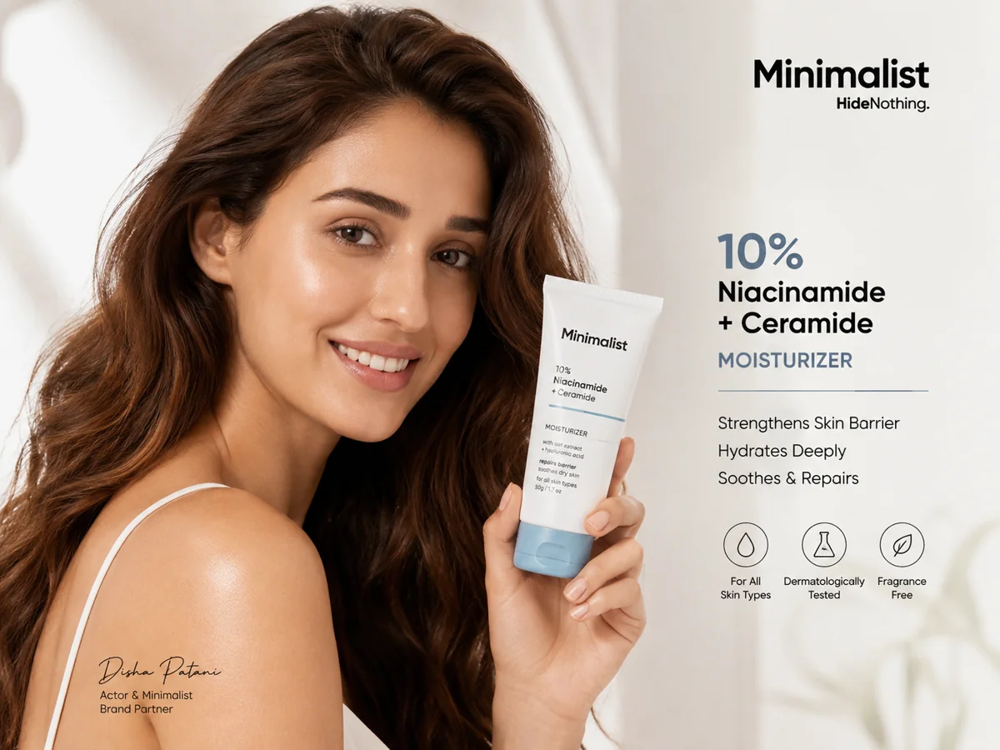
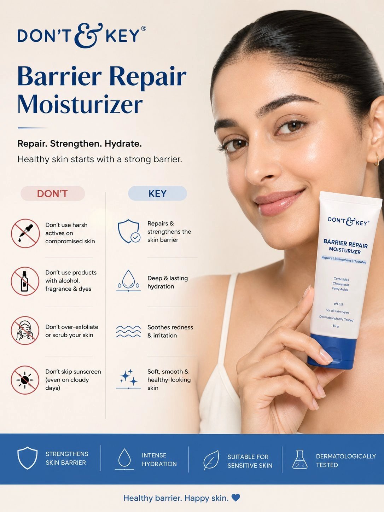
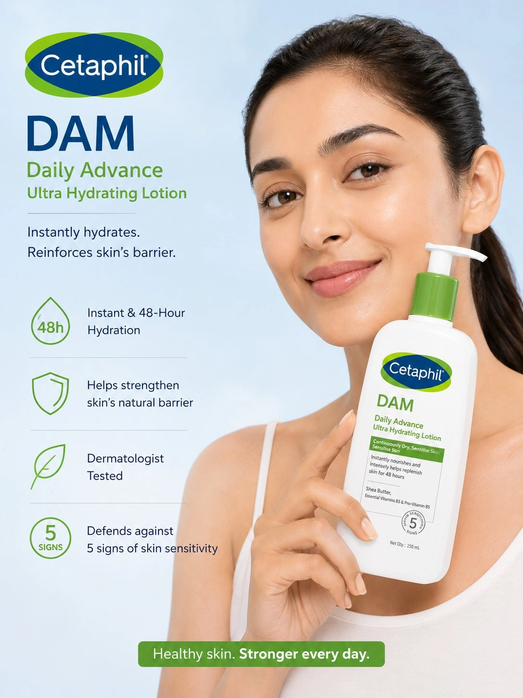

🔥 Top 5 Best Moisturizers Under ₹700 in India

Top 5 moisturizers ranked by hydration, ingredients, and value for Indian skin — 2026.
A good moisturizer is the foundation of healthy, glowing skin — even more important than expensive serums or toners. When your skin stays properly hydrated, it looks softer, smoother, and more fresh naturally. A strong skin barrier also helps reduce dryness, irritation, breakouts, and early ageing.
In India, choosing the right moisturizer matters even more because our weather changes a lot — from humid summers to dry winters. The right moisturizer for your skin type can show visible results within just a few weeks. All five picks below are affordable under ₹700 and genuinely worth trying.
✨ Tips Before You Pick a Moisturizer
- Oily skin: Choose a water-based or gel moisturizer labelled "oil-free" or "non-comedogenic." Heavy creams will clog pores and worsen breakouts.
- Sensitive skin: Avoid fragrances and alcohol. Look for Ceramides, Centella Asiatica, or Aloe Vera — these calm and repair the skin barrier without irritation.
- Apply moisturizer immediately after washing your face — within 60 seconds — while skin is still slightly damp. This seals in moisture far more effectively than applying on completely dry skin.
👉 Here are our top 5 picks — tested, compared, and ranked for Indian skin and Indian weather:
This page contains affiliate links. If you buy through these links, we may earn a small commission at no extra cost to you.
1. CeraVe Moisturizing Cream 🔥 Editor's Pick

⭐ Best overall — dermatologist recommended, suitable for all skin types
Why we picked it: CeraVe is the gold standard in affordable moisturizers worldwide — and Indian dermatologists recommend it more than any other drugstore cream. It contains three essential ceramides that directly rebuild and maintain your skin barrier, plus Hyaluronic Acid for lasting hydration. The MVE technology releases moisture slowly throughout the day, so your skin stays soft from morning to night with just one application.
- ✔ 3 Essential Ceramides (1, 3, 6-II) — rebuild the skin barrier directly
- ✔ Hyaluronic Acid — deep hydration that lasts all day
- ✔ MVE slow-release technology — 24-hour moisture from one application
- ✔ Non-comedogenic — will not clog pores or cause breakouts
- ✔ Fragrance-free, paraben-free, allergy-tested
- ✔ Suitable for dry, normal, and sensitive skin types
- ✔ Approx. ₹383 for 50ml
- ❌ Slightly thick texture — may feel heavy in very hot and humid weather
- ❌ Not ideal for very oily skin — use only a pea-sized amount if oily
2. Plum Green Tea Mattifying Face Moisturizer with Glycolic acid
⭐ Best for Oily & Combination Skin — lightweight gel, no greasiness
Why we picked it: We chose this moisturizer for its exceptional ability to hydrate oily and acne-prone skin without any greasy residue. Its lightweight, vegan formula uses green tea and glycolic acid to control excess oil and keep pores clear, making it a perfect daily essential for a long-lasting matte finish.
- ✔ Instant Matting: Effectively controls shine for hours, even in humid weather
- ✔ 100% vegan and free from parabens, SLS, and silicones.
- ✔ Absorbs quickly and won't clog pores or cause breakouts.
- ✔ Contains Green Tea for acne control and Glycolic Acid to gently exfoliate and brighten.
- ✔ Approx. ₹399 for 50ml
- ❌ Not for Dry Skin: The mattifying effect may feel too drying for those with normal to dry skin types.
3. Minimalist 10% Niacinamide + Ceramide Moisturizer

Why we picked it: We selected this moisturizer for its science-backed approach to skin barrier repair. It focuses on restoring the skin's natural protective layer using a high-quality ceramide along with cholesterol and fatty acids, which help support damaged or weakened skin barriers.It is especially suitable for dry, sensitive, dehydrated, or over-exfoliated skin.
- ✔ Contains 5 essential ceramides that help strengthen and repair the skin barrier
- ✔ Uses the 3:1:1 ceramide : cholesterol : fatty acid ratio, which is considered effective for barrier recovery.
- ✔ Includes Madecassoside and oat extract, which help calm irritation and redness.
- ✔ Gives deep hydration without feeling extremely heavy for most oily-combination skin users.
- ✔ Works well for skin damaged by retinoids, exfoliation, acne treatments, or harsh weather.
- ✔ Fragrance-free and non-comedogenic, which many sensitive-skin users prefer.
- ✔ Approx. ₹539 for 50ml
- ❌ A few oily-skin users feel it becomes slightly sticky or greasy in humid weather.
4. Dot & Key Barrier Repair Moisturizer

Why we picked it: Dot & Key Barrier Repair Moisturizer is a well-balanced moisturizer that focuses on hydration and skin barrier support without feeling too thick or greasy. Its combination of ceramides, probiotics, hyaluronic acid, and rice water helps keep skin soft, calm, and healthy-looking. The lightweight gel-cream texture makes it especially suitable for Indian weather and for people with normal, combination, or slightly oily skin.One of the most affordable barrier-repair moisturizers on this list, offering a generous 100g quantity at a budget-friendly price.
- ✔ Contains 5 ceramides that help strengthen and repair the skin barrier.
- ✔ Includes probiotics and rice water, which help soothe and nourish the skin.
- ✔ Provides good hydration with hyaluronic acid, helping skin feel soft and plump.
- ✔ Lightweight gel-cream texture absorbs quickly without heavy greasiness.
- ✔ One of the most affordable barrier-repair moisturizers on this list
- ✔ Approx. ₹335 for 100ml, the most budget-friendly price
- ❌ May not be enough moisturization alone for very dry skin in winter
5. Cetaphil DAM Daily Advance Ultra Hydrating Lotion for Dry, Sensitive Skin

Why we picked it: Cetaphil DAM Daily Advance Ultra Hydrating Lotion is a simple dermatologist-recommended moisturizer that focuses on deep hydration and barrier protection. Its rich yet non-irritating formula works especially well for dry, sensitive, and easily irritated skin.Unlike many fragranced moisturizers, it keeps the ingredient list gentle making it a safe everyday option for people who prefer basic, no-nonsense skincare.
- ✔ Provides long-lasting hydration and helps relieve dryness effectively.
- ✔ Contains ingredients like shea butter and glycerin that help soften and nourish the skin.
- ✔ Gentle, fragrance-free formula suitable for sensitive skin.
- ✔ Works well for repairing dry or damaged skin barrier.
- ✔ Dermatologist-recommended and trusted by many people with sensitive skin.
- ✔ Suitable for both face and body, making it versatile for daily use.
- ✔ Approx. ₹230 for 30ml, the most budget-friendly price
- ❌ Texture can feel slightly heavy or greasy for oily skin, especially in humid weather.
Why Trust Us?
- ✔ We research and compare real user reviews across Amazon & Flipkart
- ✔ We focus on value-for-money products for Indian buyers
- ✔ No paid placements — products are chosen based on performance
- ✔ We update our lists regularly based on latest prices & ratings